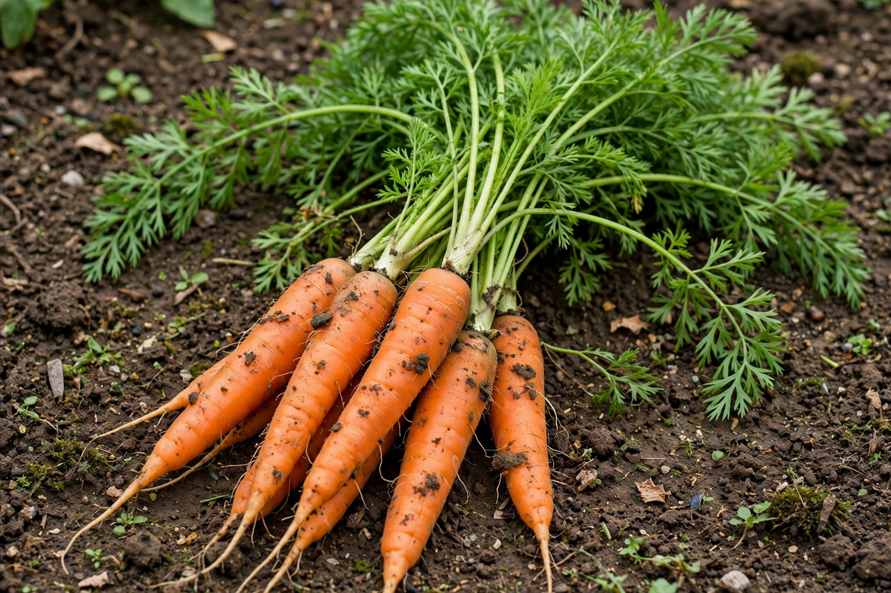

Carrot
From Wikipedia, the free encyclopedia

The carrot (Daucus carota subsp. sativus) is a root vegetable of the parsley family, grown for its thickened taproot — crisp, sweet, and most familiar in orange, though purple, yellow, red and white carrots are older colours. Carrots were domesticated in the Persia–Central Asia region, first for their aromatic seeds and leaves; the roots in early cultivation were purple or yellow. The orange carrot rose in the Netherlands in the 17th century. China is the largest producer, and "baby-cut" carrots — full-sized roots milled into snack pieces — rescued the US industry in the 1980s.
The orange myth and the night-vision myth
Popular history credits Dutch growers with breeding orange carrots as a tribute to William of Orange during the Dutch revolt. The timing roughly fits — orange types were selected in the Netherlands around the 1600s — but historians find the patriotism story unproven, a tidy legend stuck to a gradual selection. A better-documented tale was manufactured: in the Second World War, Britain's Air Ministry credited RAF night-fighter aces' success to carrot-fuelled eyesight, a cover story for airborne radar. Carrots do supply beta-carotene, converted to vitamin A, whose deficiency does cause night blindness — but extra carrots do not sharpen healthy eyes. The myth persists, delightful and unfalsifiable, in schoolrooms everywhere.
Cultivation and types
Carrot types trade length for soil: stocky Chantenay for heavy ground, long Imperator for deep sand and the fresh market, slender Nantes for sweetness. Biennial by nature, they are harvested in their first year before the root turns woody. Wild carrot (Queen Anne's lace) is the same species, and carrot-fly is the grower's nemesis. Beyond the bunch: carrots sweeten stocks and soffritto, pickle across Asia, juice well, bake into the spiced, cream-cheese-frosted carrot cake (whose modern form is a wartime, sugar-short American invention with medieval European roots in sweetened carrot puddings).